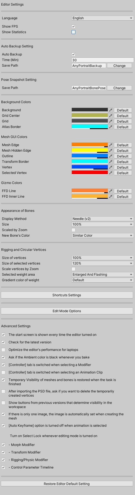
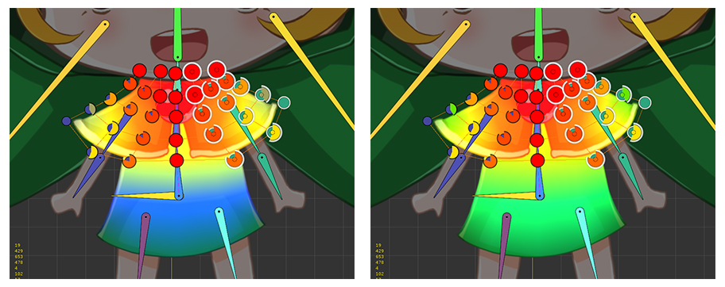
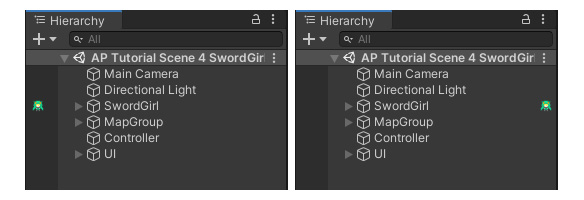

AnyPortrait > マニュアル > 設定ダイアログ
設定ダイアログ
1.3.5

「設定ダイアログ（Setting Dialog）」を利用して、AnyPortraitエディタやキャラクターの設定を変更することができます。
エディタの上部にある歯車のアイコンをクリックすると、「設定ダイアログ」が開きます。

Portraitタブを選択すると、現在作業中のPortraitのデフォルト設定が表示されます。
（Bakeに関する設定は、 「Bakeダイアログ」（関連ページ）で変更することができます。）
1. Name : Portraitの名前です。
2. Is Important, FPS
: Importantオプションです。
このオプションをオンにする毎フレームごとに更新がされ、オプションがオフになるとFPSオプションの値分だけ更新します。
詳細については、関連ページをご覧ください。
3. Scale of Root Bone : ボーンのサイズの演算方式です。
詳細については、関連ページをご覧ください。
4. Save Backup (Manual)
: バックアップファイルを作成します。

Editorタブでは、AnyPortraitに関連する設定を変更することができます。
エディタの言語、表示される情報、自動バックアップ、色などのオプションを変更することができます。
詳細については、下から確認することができます。

Aboutタブでは、AnyPortraitビルドバージョンが明示されており、AnyPortraitに含まれているオープンソースのライセンスが明示されています。
AnyPortraitはユニティの「Asset Store Terms of Service and EULA」を従っているので、ここで明記されていません。
（サービス利用規約のページ）
Editorタブの設定

1. Language : エディタの言語を変更することができます。 （英語、韓国語、フランス語、ドイツ語、スペイン語、イタリア語、デンマーク語、日本語、中国語、ポーランド語）
2. Show FPS : エディタのFPS（Frames Per Second）をワークスペースに出力します。
3. Show Statistics : 頂点の数、メッシュの数などの情報をワークスペースに出力します。
4. Update Mode
: エディタ自体のアップデート方法を決定します。既存の「Compatible Mode」が選択されており、性能向上のため、外部のプラグインをインストールして動作する「Accelerated Mode」に変更することもできます。(v1.3.2)
5. Auto Backup, Time, Save Path
: 自動バックアップの設定です。
数分ごとに保存するか、どちらのパスに保存するかを設定することができます。
6. Pose Snapshot Setting
: 骨が含まれているアニメーションを作成するときにポーズを保存する際のパスを設定します。
7. Background Colors
: ワークスペースの背景色とグリッドとAtlasのアウトラインの色です。
8. Mesh GUI Colors
: メッシと頂点、アウトラインなどの色です。
9. Gizmo Colors
: FFDツールの色を設定することができます。
10. Appearance of Bones
: ワークスペースで、ボーンがどのように表示されるかを設定することができます。
11. Rigging and Circular Vertices
: リギングをする過程で、頂点がどのように表示されるかを設定することができます。
12. Shortcuts Settings
: エディタでのショートカットキーを変更することができます。（v1.3.0）
13. Edit Mode Options
: 編集モード時のモディファイアの動作方式、ワークスペースに表示される情報等を設定することができます。（v1.3.0）
14. Advanced Settings
: エディタの動作を詳細に設定することができます。
オプションの内容は以下の通りです。
- エディタの起動時に「起動画面」出力するかどうか
- 最新バージョンをチェックするかどうか
- ラップトップの過熱防止用に最適化機能を使用するかどうか
- Ambient色をBake時調節する機能を使用するかどうか
- モディファイヤやアニメクリップの操作時に「コントローラタブ」に転換されるかどうか
- メッシュの一時的な可視性がタスクの終了時に自動的に復元されるかどうか
- 新たに追加される骨の色が親の色と同様に設定されるかどうか
- PSDファイルからメッシュが生成される場合、メッシュの頂点を初期化するかどうかを尋ねるダイアログを表示するかどうか（v1.2.4）
- ワークスペースでの表示オプションを変更するためのボタンを続けて見せるかどうか（v1.3.0から、対応するボタンが表示メニューに移動されます）
- 画像が1個人場合は、メッシュを作成するときに自動的に画像が設定されるように動作するかどうか（v1.3.0）
- アニメーションのAuto-Keyframe機能が作業の開始時に自動的に無効にするかどうか（v1.3.0）
- 「編集モード」を実行時に「選択ロック」をオンにするかどうか
- Bake時にRender Pipelineオプションがプロジェクト設定に合わない場合に自動的に変更するメッセージを表示するかどうか（v1.3.5 / Unity 2020以降）
15. Restore ボタン
: すべての設定をデフォルト値に戻します。
ラップトップの過熱を防止するための機能
1.1.6
多くのユーザーの方々がラップトップにUnityを利用しています。
AnyPortraitは、基本的にUnityの性能を最大限に活用するのに、
このような点から、私たちは、ユーザーのラップトップが熱くなるというフィードバックを受けました。
一部の機器では、ラップトップの過熱の程度が非常に激しく、ユーザーが作業するのは難しいことができます。
v1.1.6で追加されたオプションをオンにすると、エディタの機能を制限して激しい過熱を防ぐことができます。
「設定ダイアログ」で「Editorタブ」を選択した後、「Optimize the editor's performance for laptops」オプションをオンにします。

最適化オプションをオンにする、リアルタイムでの更新がされている状況ではない場合、エディタの性能が大幅に低下します。
性能が制限される状況では、ワークスペースの左上に緑色のバッテリーアイコンが表示されます。
このオプションの特徴は以下の通りです。
- アニメーションが再生されるすべての状況では、エディタが既存のと同じように動作します。
- ルートユニットを選択した場合、アニメーションを再生したり、画面をキャプチャする場合を除き、パフォーマンスが制限されます。
- 画像は、メッシュ、制御パラメータを選択した場合、Pivot編集を除くすべての状況でパフォーマンスが制限されます。
- メッシュグループを選択した場合、Physicsモディファイヤを選択するか、Blurツールを使用している場合を除いて、パフォーマンスが制限されます。
- アニメーションを編集する場合は、アニメーションを再生する場合、またはBlurツールを使用している場合を除いて、パフォーマンスが制限されます。
- 性能が制限された状態では、物理的な効果やIKが多少不自然に動作することができます。
骨とリギングに関する設定
1.2.3

1. Appearance of Bones : 骨の外形に関する設定です。
- Display Method : 「矢印形（Arrowhead）」や「針状（Needle）」を選択して、骨の外形を変更します。
- Size : 骨の大きさです。値が増加すると幅が広がります。
- Scaled by Zoom : ワークスペースの拡大/縮小に応じて、骨の大きさが変わるかどうかを決定します。
- New Bone's Color : 骨を追加するとき、親の骨の色と「類似色」または「完全に別の色」を持つように作ら選択することができます。
2. Rigging and Circular Vertices : リギングモディファイヤで編集をするとき、円形の重み頂点に関する設定です。
- Size of vertices : 基本的な円形頂点の大きさです。
- Size of selected vertices : 選択した円形頂点のサイズ。
- Scale vertices by Zoom : ワークスペースの拡大/縮小に応じて円形頂点の大きさが変わるかどうかを決定します。
- Selected weight area : 選択された骨の重みの領域にエフェクトを追加します。「Enlarged」を選択すると、対象領域のサイズが拡大されます。 「Flashing」を選択すると、対象領域が輝きます。
- Gradient color of Weight : 骨の色ではなく、重み値によるグラデーションの色で出力するとき、グラデーションの色を決定することができます。「Default」を選択すると、既存のバージョンで使用された色の組み合わせが表示されます。v1.2.3に追加された「Vivid」を選択すると、明るく区分されやすい色の組み合わせが表示されます。

「針状（Needle）」と「矢印形（Arrowhead）」です。

選択された骨の重みに効果が追加されたものとそうでないものです。

重みのグラデーションの色です。左は「Default」オプションが適用されており、右側は「Vivid」オプションが適用されました。
Unity Hierarchyでアイコンを表示
1.3.4

UnityでAnyPortraitで製作したキャラクターを簡単に区別するために、新しいオプションが追加されました。
「Editorタブ」で「Hierarchy Icon」オプションを設定すると、Unityエディタの「Hierarchy」タブにアイコンが追加されます。
- Hide Icons : アイコンが表示されません。
- Show Icons (Left) : 名前の左側にアイコンを表示されます。
- Show Icons (Right) : 名前の右側にアイコンを表示されます。

オプションを設定すると、UnityエディタのHierarchyでAnyPortraitキャラクターを簡単に見つけることができます。